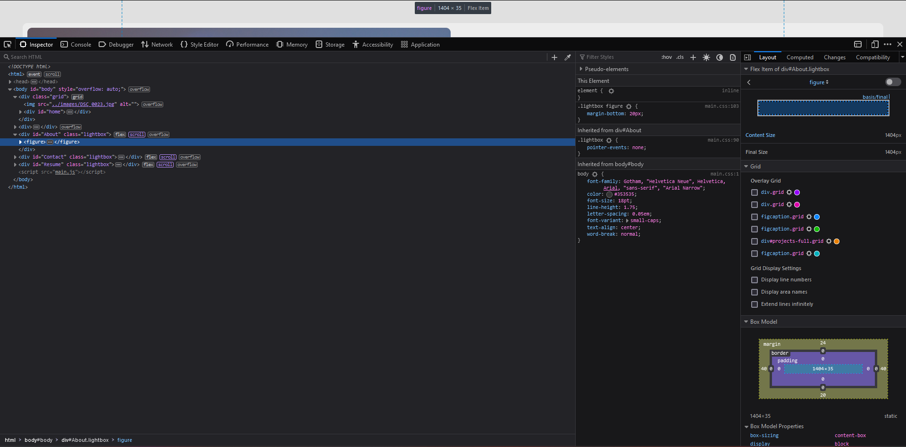

UIPath Automation
This project was undertaken by me and a coworker, our goal for this project was to us UIPath to automate what would otherwise be a time-consuming manual task. The manual task that we were working to automate took around 5 minutes and 20 steps spread across multiple websites, as this task needed to be preformed around 10,000 times it was infeasable to preform by hand with just the two of us. Our tight deadline meant that we needed to complete this project as fast as possible which lead to some difficult design requirements.
The Automation solution we arrived at consisted of several different automation programs each designed to handle one section of the manual task. We deciced to break the automation up in to multiple parts becuase despite our ability to create a single program to handle the entire process one our main goals was to save time so as to meet our deadline and we discoved that repeating certains steps of the process on many items at once was significantly faster than doing every step for each item before moving on to the next. We also ended up seperating ech section into its own program so as to save time on troubleshooting the many issues of a creating a larger program as well as to make each program easier to manual stop or start.
Portfolio Website
I started this project becuase I needed a portfolio and decided that I want to build my own from scratch to learn more about web design and devolpment.
All html, CSS, and Javascript code was programmed by using only VS code and freely available documentation. This project required me to put my Computer science skills to use and helped me improve my general programming skills as there were several challenges I encountered during the creation of this website that pushed me to improve my programming skills as well as my knowledge of all three programming languages that I used for this website.
BreadBoard Computer
An 8-bit computer built using A 6502 IC, an EEPROM, and basic electrical components
This was a project I started for fun after finding the schematics and an explanation of how and why this works.
This Project helped me to further developed my computer Engineering understanding and improved my ability to read and comprehend advanced electrical schematics.